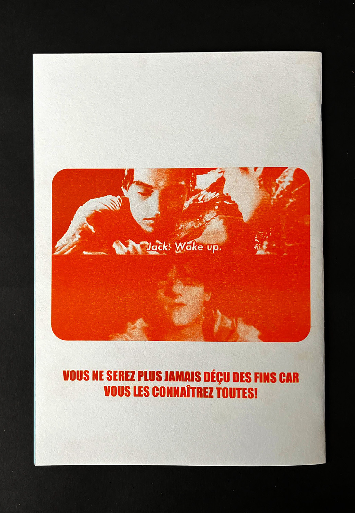
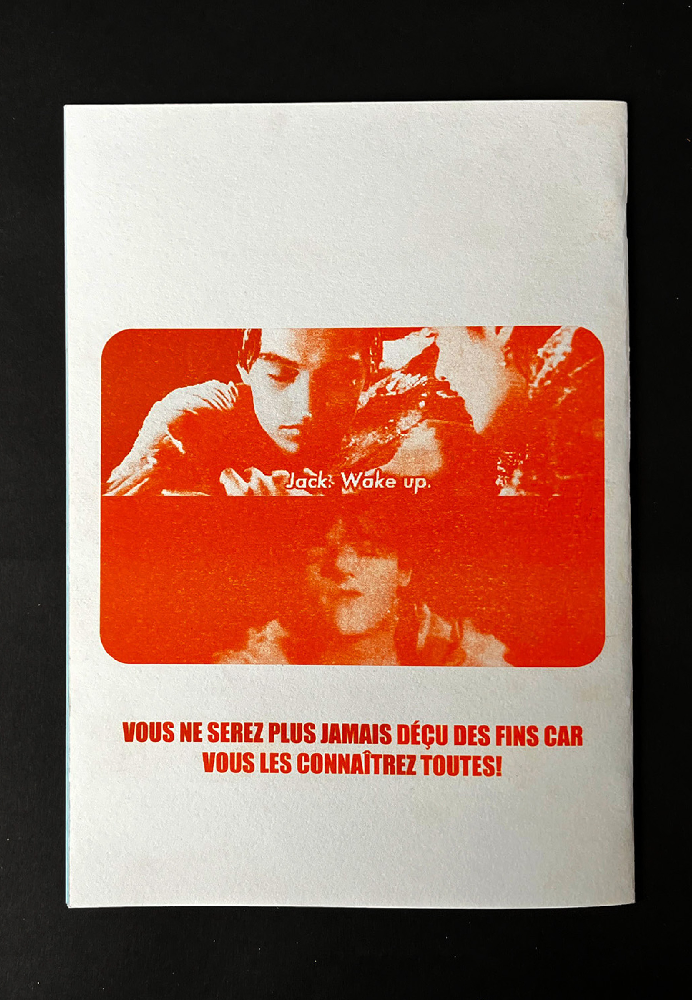
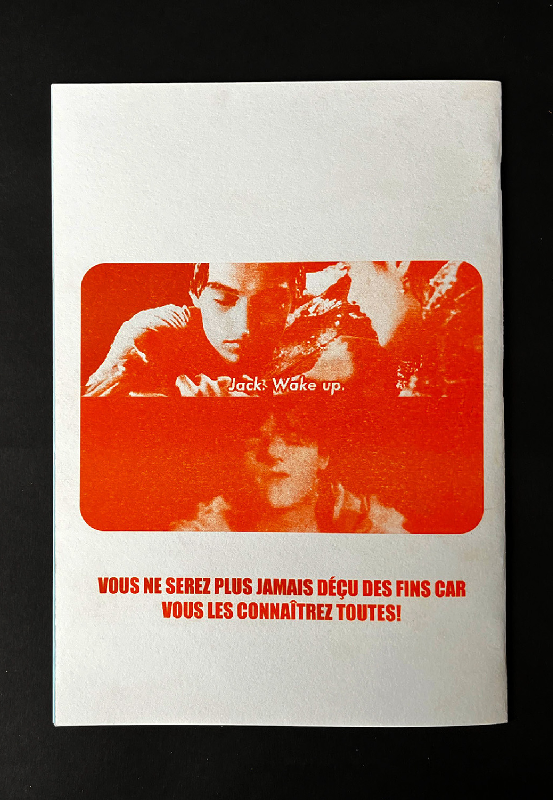

Édition avec ESCAICH Eloïse et SILAGHI Claudiu
Ce fanzine dédié à un club de cinéma a pour objectif de spoiler afin d'amener les gens à rejoindre le club et attiser la curiosité. Il a été produit en monochrome avec la technique d’impression, la risographie. À travers nos choix graphiques, nous dévoilons les informations clefs des films, rendant impossible d’éviter les spoilers. Nous avons utilisé une typographie grasse et imposante avec beaucoup d’angles, pour rendre le spoil rude, ainsi que le système de flèche indiquant directement le spoil. Ce fanzine utilise l’humour et à pour objectif de surprendre le lecteur et d'attirer la curiosité malgré les nombreuses préventions de spoil dans celui-ci. Grâce à ce fanzine, vous serez au courant de tous les moments importants d’un film, que vous le vouliez ou non. Des goodies ont été ajoutés comme une affiche et des places de cinéma en référence à ceux dans le fanzine.
